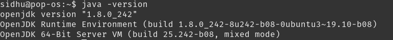
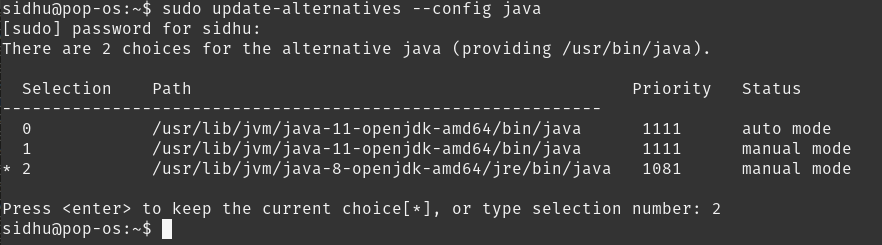
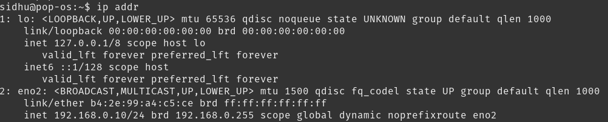
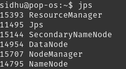
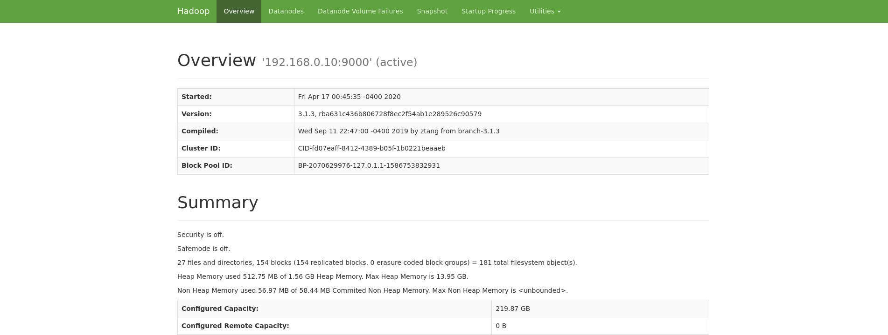
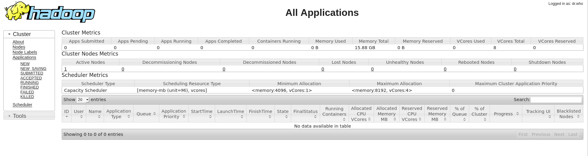
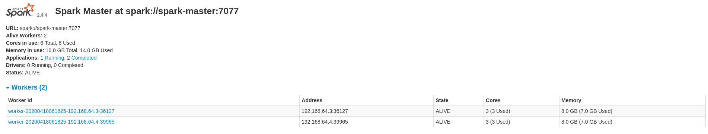
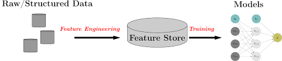

Working on your own data science projects are a great opportunity to learn some new skills and hone existing skills, but what if you want to use technologies that you would use in industry such as Hadoop, Spark on a distributed cluster, Hive, etc. and have them all integrated? This is where the value comes from when building your own infrastructure.
You become familiar with the technologies, get to know the ins and outs about how it operates, debug and experience the different types of error messages and really get a sense of how the technology works over all instead of just interfacing with it. If you are also working with your own private data or confidential data in general, you may not want to upload it to an external service to do big data processing for privacy or security reasons. So, in this tutorial I’m going to walk through how to setup your own Big Data infrastructure on your own computer, home lab, etc. We’re going to setup a single node Hadoop & Hive instance and a “distributed” spark cluster integrated with Jupyter.
Edit: Thanks to @Daniel Villanueva you can now deploy a VM with Hadoop, Spark and Hive pre-configured and ready to go through his Vagrant image. You can check it out on his Github here.
This tutorial is not for an industry production installation!
Prerequisites
- A Debian based distro - Ubuntu, Pop-os, etc
- Basic command line knowledge helps, but not essential for installation
Step 1 - Download Hadoop and Hive
Hadoop is easily the most common big data warehouse platform used in industry today and is a must know for any big data job. In short, Hadoop is an open-source software framework used for storing and processing Big Data in a distributed manner. You can download the latest version from here.
Hive is usually added on top of Hadoop to query the data in Hadoop in a SQL like fashion. Hive makes job easy for performing operations like
- Data encapsulation
- Ad-hoc queries
- Analysis of huge datasets
Hive is slow and generally used for batch jobs only. A much faster version of Hive would be something like Impala, but for home use - it gets the job done. You can download the latest version of Hive here.
Make sure you download the binary (bin) version and not the source (src) version!
Extract the files to /opt
cd ~/Downloads
tar -C /opt -xzvf apache-hive-3.1.2-bin.tar.gz
tar -C /opt -xzvf hadoop-3.1.3-src.tar.gzRename them to hive and hadoop.
cd /opt
mv hadoop-3.1.3-src hadoop
mv apache-hive-3.1.2-bin hiveStep 3 - Install Java 8
One of the most important steps of this tutorial.
{% include alert.html text=“If this is done incorrectly, it will cause a grueling number of hours debugging vague error messages just to realize the problem and solution was so simple.” %}
Hadoop has one main requirement and this is Java version 8. Funnily enough, that’s also the Java requirement for Spark, also very important.
sudo apt-get update
sudo apt-get install openjdk-8-jdkVerify the Java version.
java -version

If for some reason you don’t see the output above, you need to update your default Java version.
sudo update-alternatives --config java

Choose the number associated with Java 8.
Check the version again.
java -version
Step 4 - Configure Hadoop + Yarn
Apache Hadoop YARN (Yet Another Resource Negotiator) is a cluster management technology. At a very basic level it helps Hadoop manage and monitor its workloads.
Initial Hadoop Setup
First let’s set our environment variables. These specifies where the configuration for Hadoop, Spark and Hive is located.
nano ~/.bashrc
Add this to the bottom of your .bashrc file.
export HADOOP_HOME=/opt/hadoop
export HADOOP_INSTALL=$HADOOP_HOME
export HADOOP_MAPRED_HOME=$HADOOP_HOME
export HADOOP_COMMON_HOME=$HADOOP_HOME
export HADOOP_HDFS_HOME=$HADOOP_HOME
export YARN_HOME=$HADOOP_HOME
export HADOOP_COMMON_LIB_NATIVE_DIR=$HADOOP_HOME/lib/native
export PATH=$PATH:$HADOOP_HOME/sbin:$HADOOP_HOME/bin
export LD_LIBRARY_PATH=$HADOOP_HOME/lib/native:$LD_LIBRARY_PATH
export HIVE_HOME=/opt/hive
export PATH=$PATH:$HIVE_HOME/binSave and exit out of nano CTRL + o, CTRL + x.
Then we need to active these changes by running source ~/.bashrc. You can also close and reopen your terminal to achieve the same result.
Next we need to make some directories and edit permissions. Make the following directories:
sudo mkdir -p /app/hadoop/tmp
mkdir -p ~/hdfs/namenode
mkdir ~/hdfs/datanodeEdit the permissions for /app/hadoop/tmp, giving it read and write access.
sudo chown -R $USER:$USER /app
chmod a+rw -R /appConfig Files
All the Hadoop configuration files are located in /opt/hadoop/etc/hadoop/.
cd /opt/hadoop/etc/hadoop
Next we need to edit the following configuration files:
- core-site.xml
- hadoop-env.sh
- hdfs-site.xml
- mapred-site.xml
- yarn-site.xmlcore-site.xml
<configuration>
<property>
<name>hadoop.tmp.dir</name>
<value>/app/hadoop/tmp</value>
<description>Parent directory for other temporary directories.</description>
</property>
<property>
<name>fs.defaultFS </name>
<value>hdfs://YOUR_IP:9000</value>
<description>The name of the default file system. </description>
</property>
</configuration>hadoop.tmp.dir: Fairly self explanatory, just a directory for hadoop to store other temp directories fs.defaultFS: The IP and port of your file system to access over the network. It should be your IP so other nodes can connect to it if this were a distributed system.
To find your ip, type ip addr or ifconfig on the command line:

hadoop-env.sh
- Identify the location of the Java 8 JDK, it should be similar or idential to
/usr/lib/jvm/java-8-openjdk-amd64/ - Add the following line to
hadoop-env.sh:export JAVA_HOME=/usr/lib/jvm/java-8-openjdk-amd64/
hdfs-site.xml
<configuration>
<property>
<name>dfs.replication</name>
<value>1</value>
<description>Default block replication.</description>
</property>
<property>
<name>dfs.name.dir</name>
<value>file:///home/YOUR_USER/hdfs/namenode</value>
</property>
<property>
<name>dfs.data.dir</name>
<value>file:///home/YOUR_USER/hdfs/datanode</value>
</property>
</configuration>dfs.replication: How many nodes to replicate the data on.
dfs.name.dir: Directory for namenode blocks
dfs.data.dir: Directory for the data node blocks
mapred-site.xml
<configuration>
<property>
<name>mapreduce.framework.name</name>
<value>yarn</value>
</property>
<property>
<name>mapreduce.jobtracker.address</name>
<value>localhost:54311</value>
</property>
<property>
<name>yarn.app.mapreduce.am.env</name>
<value>HADOOP_MAPRED_HOME=$HADOOP_MAPRED_HOME</value>
</property>
<property>
<name>mapreduce.map.env</name>
<value>HADOOP_MAPRED_HOME=$HADOOP_MAPRED_HOME</value>
</property>
<property>
<name>mapreduce.reduce.env</name>
<value>HADOOP_MAPRED_HOME=$HADOOP_MAPRED_HOME</value>
</property>
<property>
<name>mapreduce.map.memory.mb</name>
<value>4096</value>
</property>
<property>
<name>mapreduce.reduce.memory.mb</name>
<value>4096</value>
</property>
</configuration>mapreduce.framework.name: The runtime framework for executing MapReduce jobs. Can be one of local, classic or yarn.
mapreduce.jobtracker.address: The host and port that the MapReduce job tracker runs at. If “local”, then jobs are run in-process as a single map and reduce task.
yarn.app.mapreduce.am.env: Yarn map reduce env variable.
mapreduce.map.env: Map reduce map env variable.
mapreduce.reduce.env: Map reduce reduce env variable.
mapreduce.map.memory.mb: Upper memory limit that Hadoop allows to be allocated to a mapper, in megabytes. The default is 512.
mapreduce.reduce.memory.mb: Upper memory limit that Hadoop allows to be allocated to a reducer, in megabytes. The default is 512.
yarn-site.xml
<configuration>
<!-- Site specific YARN configuration properties -->
<property>
<name>yarn.resourcemanager.hostname</name>
<value>localhost</value>
</property>
<property>
<name>yarn.nodemanager.aux-services</name>
<value>mapreduce_shuffle</value>
</property>
<property>
<name>yarn.nodemanager.resource.memory-mb</name>
<value>16256</value>
</property>
<property>
<name>yarn.app.mapreduce.am.resource.mb</name>
<value>4096</value>
</property>
<property>
<name>yarn.scheduler.minimum-allocation-mb</name>
<value>4096</value>
</property>
</configuration>yarn.resourcemanager.hostname: The hostname of the RM. Could also be an ip address of a remote yarn instance.
yarn.nodemanager.aux-services: Selects a shuffle service that needs to be set for MapReduce to run.
yarn.nodemanager.resource.memory-mb: Amount of physical memory, in MB, that can be allocated for containers. For reference, I have 64GB of RAM on my machine. If this value is too low, you won’t be able to process large files, getting a FileSegmentManagedBuffer error.
yarn.app.mapreduce.am.resource.mb: This property specify criteria to select resource for particular job. Any nodemanager which has equal or more memory available will get selected for executing job.
yarn.scheduler.minimum-allocation-mb: The minimum allocation for every container request at the RM, in MBs. Memory requests lower than this won’t take effect, and the specified value will get allocated at minimum.
Start Hadoop
Before we start Hadoop we have to format the namenode:
hdfs namenode -format
Now we’re good to start Hadoop! Run the following commands:
start-dfs.sh
start-yarn.shTo ensure everything has started run the following commands:
ss -ln | grep 9000
jps

You can now also access the Hadoop web UI at localhost:9870.

You can also access the Yarn web UI at localhost:8088.

Step 5 - Setup Hive
Now that we have Hadoop up and running, let’s install Hive on top of it.
First let’s make a directory in Hadoop where our Hive tables are going to be stored.
hdfs dfs -mkdir -p /user/hive/warehouse
Configure permissions.
hdfs dfs -chmod -R a+rw /user/hive
Setup a Metastore
The Hive Metastore is the central repository of Hive Metadata. It stores the meta data for Hive tables and relations (Schema and Locations etc). It provides client access to this information by using metastore service API. There are 3 different types of metastores:
- Embedded Metastore: Only one Hive session can be open at a time.
- Local Metastore: Multiple Hive sessions, have to connect to an external DB.
- Remote Metastore: Multiple Hive sessions, interact with the metastore using Thrift API, better security and scalability.
To read up on the difference between each type of metastore in more detail, this is a great link.
In this guide we’re going to be setting up a remote metastore using a MySQL DB.
sudo apt update
sudo apt install mysql-server
sudo mysql_secure_installationRun the following commands:
sudo mysqlCREATE DATABASE metastore;
CREATE USER 'hive'@'%' IDENTIFIED BY 'PW_FOR_HIVE';
GRANT ALL ON metastore.* TO 'hive'@'%' WITH GRANT OPTION;Replace PW_FOR_HIVE with the password you want to use for the hive user in MySQL.
Download the MySQL Java Connector:
wget https://dev.mysql.com/get/Downloads/Connector-J/mysql-connector-java-8.0.19.tar.gz
tar -xzvf mysql-connector-java-8.0.19.tar.gz
cd mysql-connect-java-8.0.19
cp mysql-connector-java-8.0.19.jar /opt/hive/lib/Edit hive-site.xml
Now edit /opt/hive/conf/hive-site.xml:
<configuration>
<property>
<name>javax.jdo.option.ConnectionURL</name>
<value>jdbc:mysql://YOUR_IP:3306/metastore?createDatabaseIfNotExist=true&useLegacyDatetimeCode=false&serverTimezone=UTC</value>
<description>metadata is stored in a MySQL server</description>
</property>
<property>
<name>javax.jdo.option.ConnectionDriverName</name>
<value>com.mysql.jdbc.Driver</value>
<description>MySQL JDBC driver class</description>
</property>
<property>
<name>javax.jdo.option.ConnectionUserName</name>
<value>hive</value>
<description>user name for connecting to mysql server</description>
</property>
<property>
<name>javax.jdo.option.ConnectionPassword</name>
<value>PW_FOR_HIVE</value>
<description>password for connecting to mysql server</description>
</property>
</configuration>Replace YOUR_IP with the local ip address. Replace PW_FOR_HIVE with the password you initiated for the hive user earlier.
Initialize Schema
Now let’s make MySQL accessible from anywhere on your network.
sudo nano /etc/mysql/mysql.conf.d/mysqld.cnf
Change bind-address to 0.0.0.0.
Restart the service for the changes take effect: sudo systemctl restart mysql.service
Finally, run schematool -dbType mysql -initSchema to initialize the schema in the metastore database.
Start Hive Metastore
hive --service metastore
Testing Hive
First start up Hive from the command line by calling hive.
Let’s create a test table:
CREATE TABLE IF NOT EXISTS test_table
(col1 int COMMENT 'Integer Column',
col2 string COMMENT 'String Column')
COMMENT 'This is test table'
ROW FORMAT DELIMITED
FIELDS TERMINATED BY ','
STORED AS TEXTFILE;Then insert some test data.
INSERT INTO test_table VALUES(1,'aaa');Then we can view the data from the table.
SELECT * FROM test_table;Step 6 - Setup Spark
Spark is a general-purpose distributed data processing engine that is suitable for use in a wide range of circumstances. On top of the Spark core data processing engine, there are libraries for SQL, machine learning, graph computation, and stream processing, which can be used together in an application. In this tutorial we’re going to setup a standalone Spark cluster using Docker and have it be able to spin up any number of workers. This reasoning behind this is we want to simulate a remote cluster and some of the configuration required for it.
In a production setting, Spark is usually going to be configured to use Yarn and the resources already allocated for Hadoop.
First we need to create the Docker file. We’re going to use Spark version 2.4.4 in this tutorial but you can change it to 2.4.5 if you want the latest version and it also ships with Hadoop 2.7 to manage persistence and book keeping between nodes. In a production setting, Spark is often configured with Yarn to use the existing Hadoop environment and resources, since we only have Hadoop on one node, we’re going to run a spark standalone cluster. To configure Spark to run with Yarn requires minimal changes and you can see the difference in setup here.
Setup Standalone Cluster
nano Dockerfile
FROM python:3.7-alpine
ARG SPARK_VERSION=2.4.4
ARG HADOOP_VERSION=2.7
RUN wget -q https://archive.apache.org/dist/spark/spark-${SPARK_VERSION}/spark-${SPARK_VERSION}-bin-hadoop${HADOOP_VERSION}.tgz \
&& tar xzf spark-${SPARK_VERSION}-bin-hadoop${HADOOP_VERSION}.tgz -C / \
&& rm spark-${SPARK_VERSION}-bin-hadoop${HADOOP_VERSION}.tgz \
&& ln -s /spark-${SPARK_VERSION}-bin-hadoop${HADOOP_VERSION} /spark
RUN apk add shell coreutils procps
RUN apk fetch openjdk8
RUN apk add openjdk8
RUN pip3 install ipython
ENV PYSPARK_DRIVER_PYTHON ipythonNow we want to spin up a Spark master and N number of spark workers. For this we’re going to use docker-compose.
nano docker-compose.yml
version: "3.3"
networks:
spark-network:
services:
spark-master:
build: .
container_name: spark-master
hostname: spark-master
command: >
/bin/sh -c '
/spark/sbin/start-master.sh
&& tail -f /spark/logs/*'
ports:
- 8080:8080
- 7077:7077
networks:
- spark-network
spark-worker:
build: .
depends_on:
- spark-master
command: >
/bin/sh -c '
/spark/sbin/start-slave.sh $$SPARK_MASTER
&& tail -f /spark/logs/*'
env_file:
- spark-worker.env
environment:
- SPARK_MASTER=spark://spark-master:7077
- SPARK_WORKER_WEBUI_PORT=8080
ports:
- 8080
networks:
- spark-networkFor the master container we’re exposing port 7077 for our applications to connect to and port 8080 for the Spark job UI. For the worker we’re connecting to our Spark master through the environment variables.
For more options to configure the spark worker, we add them to spark-worker.env file.
nano spark-worker.env
SPARK_WORKER_CORES=3
SPARK_WORKER_MEMORY=8GIn this configuration, each worker will use 3 cores and have 8GB of memory. Since my machine has 6 cores, we’re going to start up 2 workers. Change these values so that it is relative to your machine. For example, if your machine only has 16GB of RAM, a good memory value might be 2 or 4GB. For a full list of environment variables and more information on stand alone mode, you can read the full documentation here. If you’re wondering about executor memory, that set when submitting or starting applications.
docker-compose build
docker-compose up -d --scale spark-worker=2Now spark is up and running and you can view the web UI at localhost:8080!

Install Spark Locally
On your local machine, or any machine that’s going to be creating or using Spark, Spark needs to be installed. Since we are setting up a remote Spark cluster we have install it from the source. We’re going to use PySpark for this tutorial because I most of the time I use Python for my personal projects.
You can download Spark from here.
Ensure you download the same version you installed on your master. For this tutorial it’s version 2.4.4
wget https://archive.apache.org/dist/spark/spark-2.4.4/spark-2.4.4-bin-hadoop2.7.tgz
tar -C /opt -xzvf spark-2.4.4-bin-hadoop2.7.tgzSetup the Spark environment variables, nano ~/.bashrc
export SPARK_HOME=/opt/spark
export PATH=$SPARK_HOME/bin:$PATH
export PYSPARK_DRIVER_PYTHON="jupyter"
export PYSPARK_DRIVER_PYTHON_OPTS="notebook"
export PYSPARK_PYTHON=python3If you prefer Jupyter Lab, change ‘notebook’, to ‘lab’ for PYSPARK_DRIVER_PYTHON_OPTS.
Config Files
To configure Spark to use our Hadoop and Hive we need to have the config files for both in the Spark config folder.
cp $HADOOP_HOME/etc/hadoop/core-site.xml /opt/spark/conf/
cp $HADOOP_HOME/etc/hadoop/hdfs-site.xml /opt/spark/conf/nano /opt/spark/conf/hive-site.xml
<configuration>
<property>
<name>hive.metastore.uris</name>
<value>thrift://YOUR_IP:9083</value>
</property>
<property>
<name>spark.sql.warehouse.dir</name>
<value>hdfs://YOUR_IP:9000/user/hive/warehouse</value>
</property>
</configuration>hive.metastore.uris: Tells Spark to interact with the Hive metastore using the Thrift API. spark.sql.warehouse.dir: Tells Spark where our Hive tables are located in HDFS.
Install PySpark
pip3 install pyspark==2.4.4 or replace 2.4.4 with whatever version you installed on your spark master.
To run PySpark connecting to our distributed cluster run:
pyspark --master spark://localhost:7077, you can also replace localhost with your ip or a remote ip.
This will start up a Jupyter Notebook with the Spark Context pre defined. As a result, we now have a single environment to analyze data with or without Spark.
By default the executor memory is only ~1GB (1024mb). To increase it start pyspark with the following command:
pyspark --master spark://localhost:7077 --executor-memory 7g
There is a 10% overhead per executor in Spark so the most we could assign is 7200mb, but to be safe and have a nice round number we’ll go with 7.
Test Integrations
By default a SparkContext is automatically created and the variable is sc.
To read from our previously created hive table.
from pyspark.sql import HiveContext
hc = HiveContext(sc)
hc.sql("show tables").show()
hc.sql("select * from test_table").show()To read a file from Hadoop the command would be:
sparksession = SparkSession.builder.appName("example-pyspark-read-and-write").getOrCreate()
df = (sparksession
.read
.format("csv")
.option("header", "true")
.load("hdfs://YOUR_IP:9000/PATH_TO_FILE")
)Practical Hadoop Use Cases
Besides storing data, Hadoop is also utilized as a Feature Store. Let’s say you’re apart of a team or organization and they have multiple models. For each model there is a data pipeline that ingests raw data, computes and transforms the data into features. For one or two models this is perfectly fine, but what if you have multiple models? What if across those models features are being reused (i.e log normalized stock prices)?
Instead of each data pipeline recomputing the same features, we can create a data pipeline that computes the features once and store it in a Feature Store. The model can now pull features from the Feature Store without any redundant computation. This reduces the number of redundant computations and transformations throughout your data pipelines!

Feature Stores also help with the following issues:
Features are not reused. A common obstacle data scientists face is spending time redeveloping features instead of using previously developed features or ones developed by other teams. Feature stores allow data scientists to avoid repeat work.
Feature definitions vary. Different teams at any one company might define and name features differently. Moreover, accessing the documentation of a specific feature (if it exists at all) is often challenging. Feature stores address this issue by keeping features and their definitions organized and consistent. The documentation of the feature store helps you create a standardized language around all of the features across the company. You know exactly how every feature is computed and what information it represents.
There is inconsistency between training and production features. Production and research environments often use different technologies and programming languages. The data streaming in to the production system needs to be processed into features in real time and fed into a machine learning model.
If you want to take a look at a Feature Store and get started for free, I recommend StreamSQL. StreamSQL allows you to stream your data from various sources such as HDFS, local file system, Kafka, etc. and create a data pipeline that can feed your model! It has the ability to save the feature store online or on your local HDFS for you to train your models. It also does the service of creating your test (hold out) set for you as well. They have a well documented API and is consistently improving upon it.
Feedback
I encourage all feedback about this post. You can e-mail me at sidhuashton@gmail.com or leave a comment on the post if you have any questions or need any help.
You can also reach me and follow me on Twitter at @ashtonasidhu.